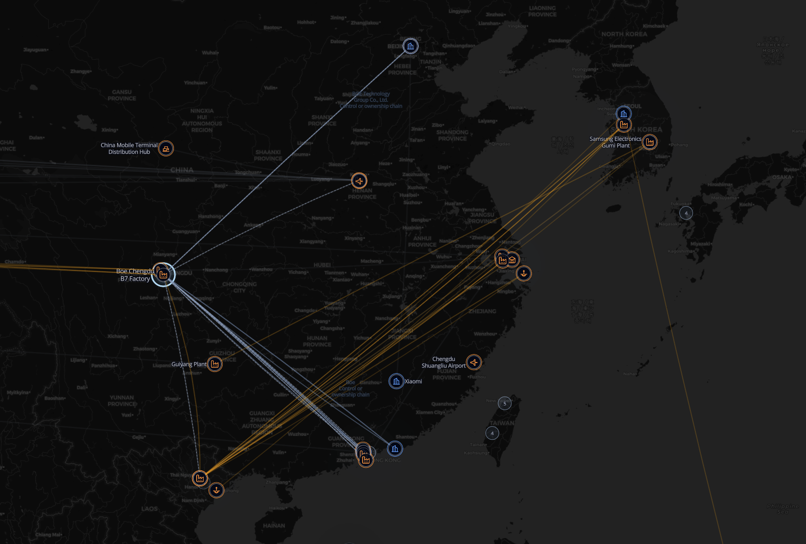
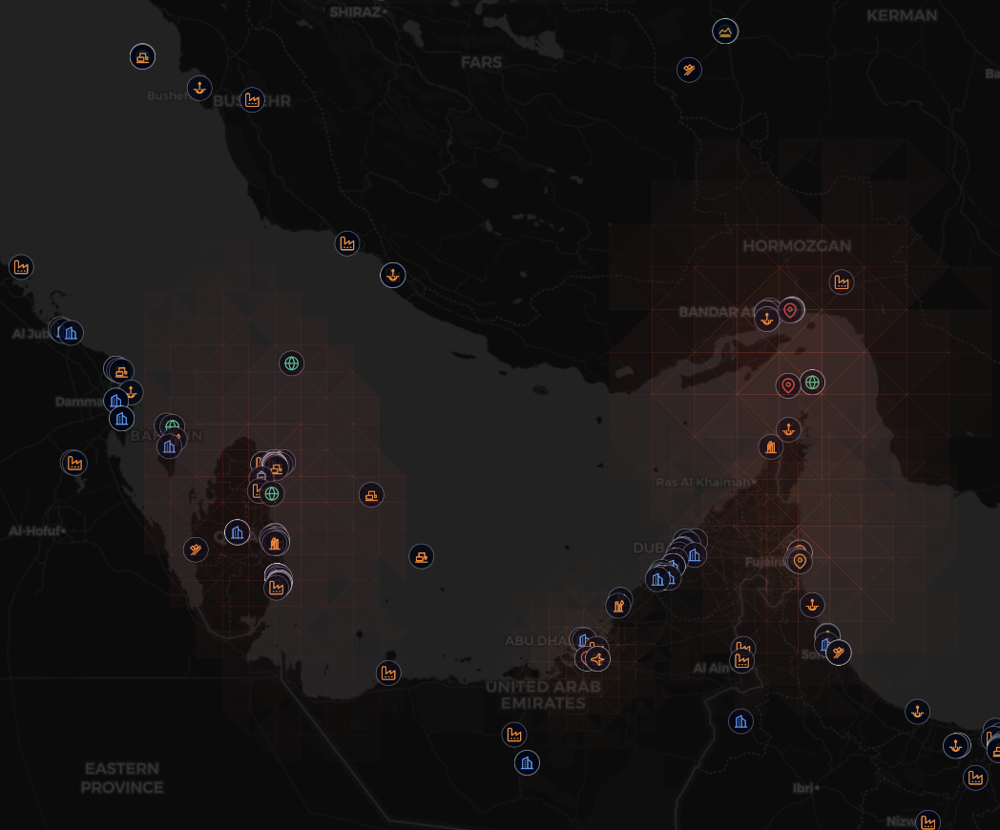
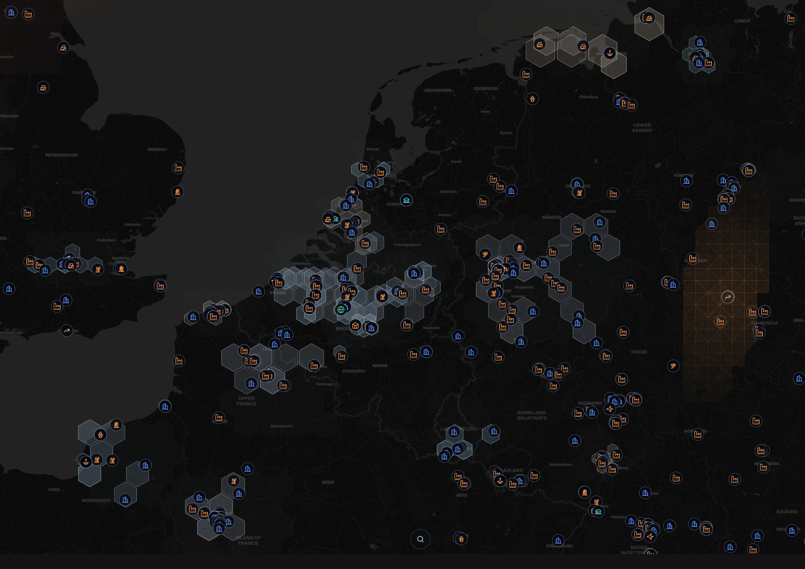

01
Connected Maps
Routes, nodes, concentration
Map facilities, transit routes, suppliers, and operational concentration in one connected geographic layer.

Working platform
The Etigram Platform is designed for teams that need mapped exposure, relational context, and scenario-ready structures rather than fragmented updates.

01
Routes, nodes, concentration
Map facilities, transit routes, suppliers, and operational concentration in one connected geographic layer.

02
Entities, control, ownership, linkage
Move from isolated entities to relationship structures: ownership, influence, dependency, and hidden operational adjacency.

03
Impact zones, spillovers, proximity
Overlay disruption zones with assets, routes, and dependencies to see where exposure becomes operational.

04
Industrial zones, adjacency, operating density
Inspect industrial clusters in more detail to understand plant adjacency, corridor dependence, and where localized disruption can propagate across nearby assets.

It connects geography, relation structure, and scenario logic so teams can move from observation to planning without context loss between tools.